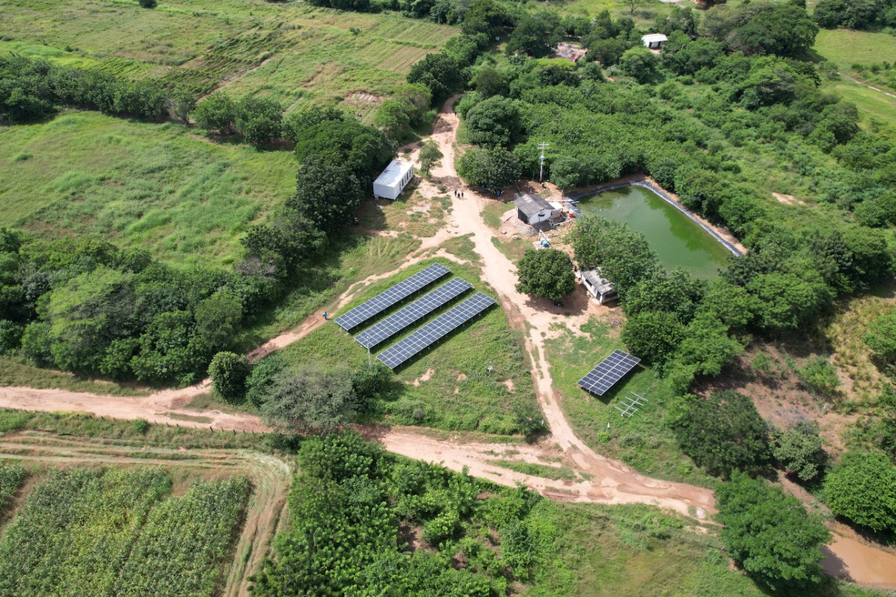

100%
Natural



información.
Conoce un poco mas sobre nuestros Suelos.
Según su textura podemos distinguir 4 tipos de suelos: arena, arcilla , pedregoso y limo. La arena es la que existe en los diversos ríos. Los suelos arenosos, como son más sueltos son fáciles de trabajar pero tienen pocas reservas de nutrientes aprovechables por las plantas.